Around the Lake
Takahiro Bessho Photography
Scroll
琵琶湖のほとりで、光と水と空が交わる一瞬を待つ。
同じ景色は二度と訪れない。だからこそ、撮る。
Chasing the fleeting light around the largest lake in Japan — where water, sky, and season meet for a single moment.
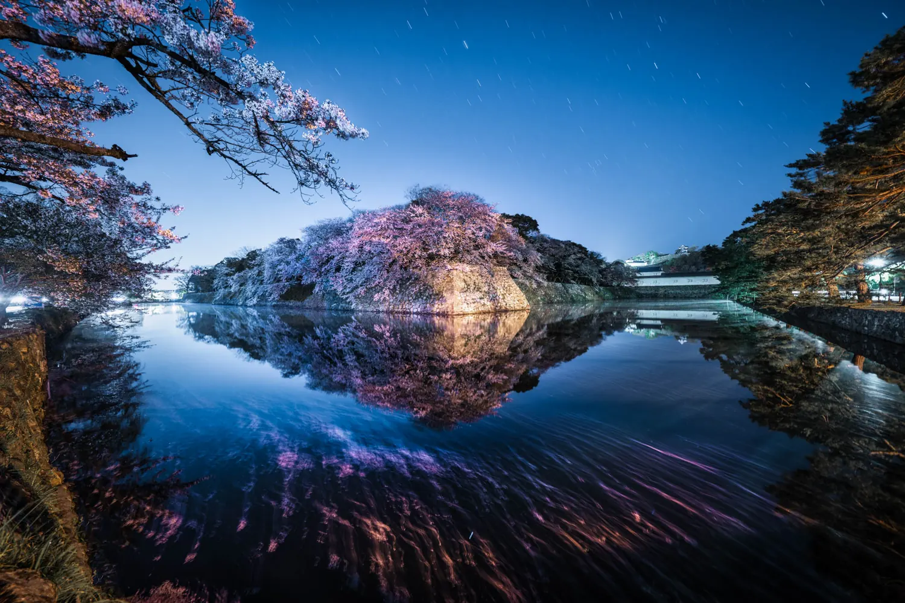
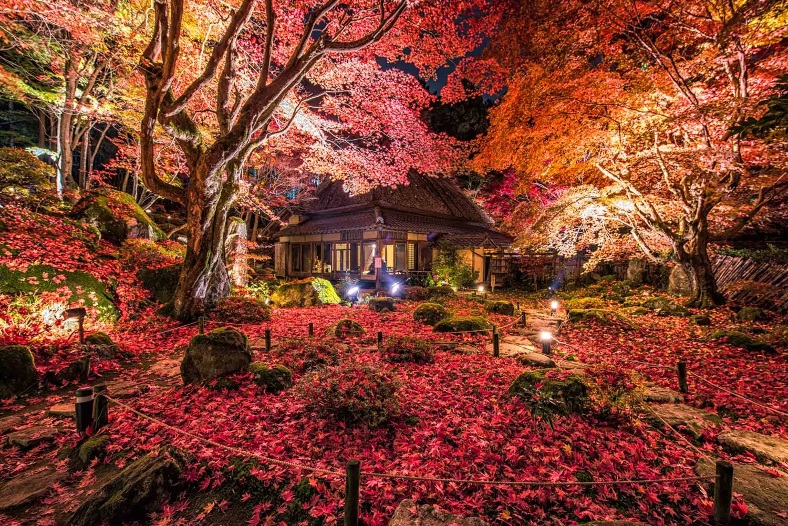
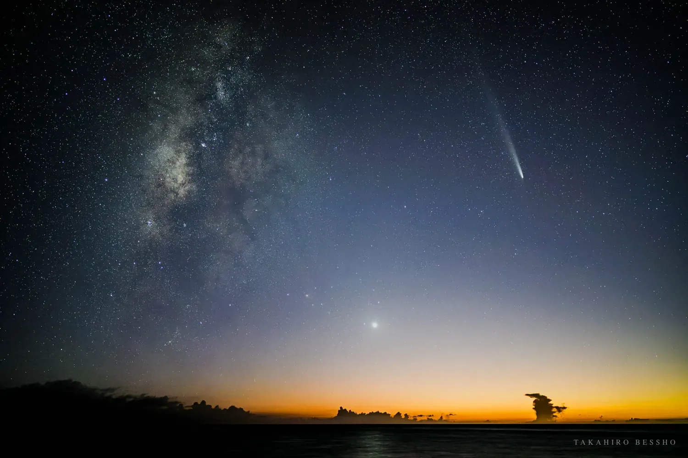
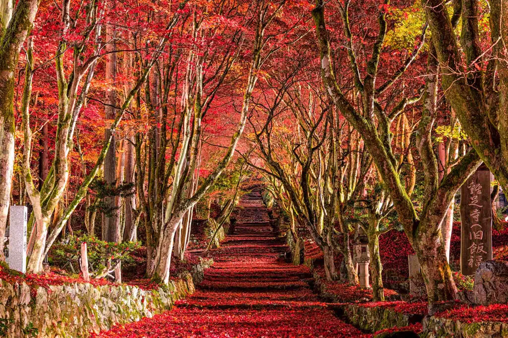
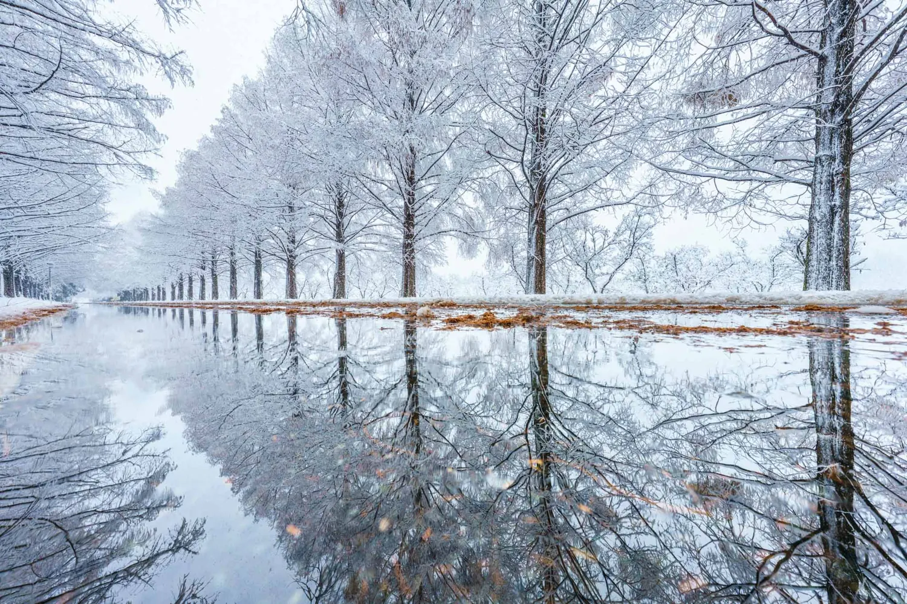
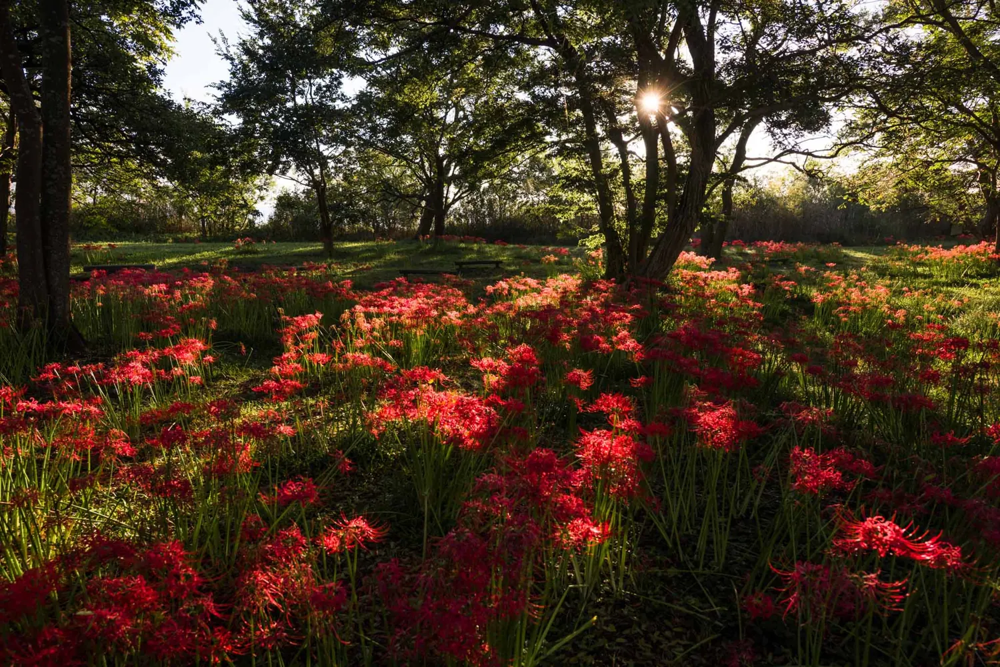
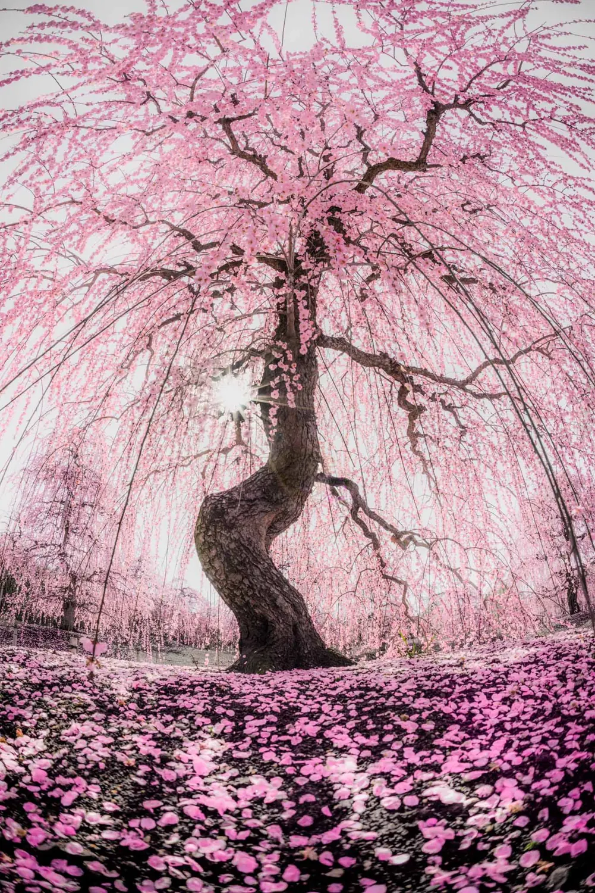
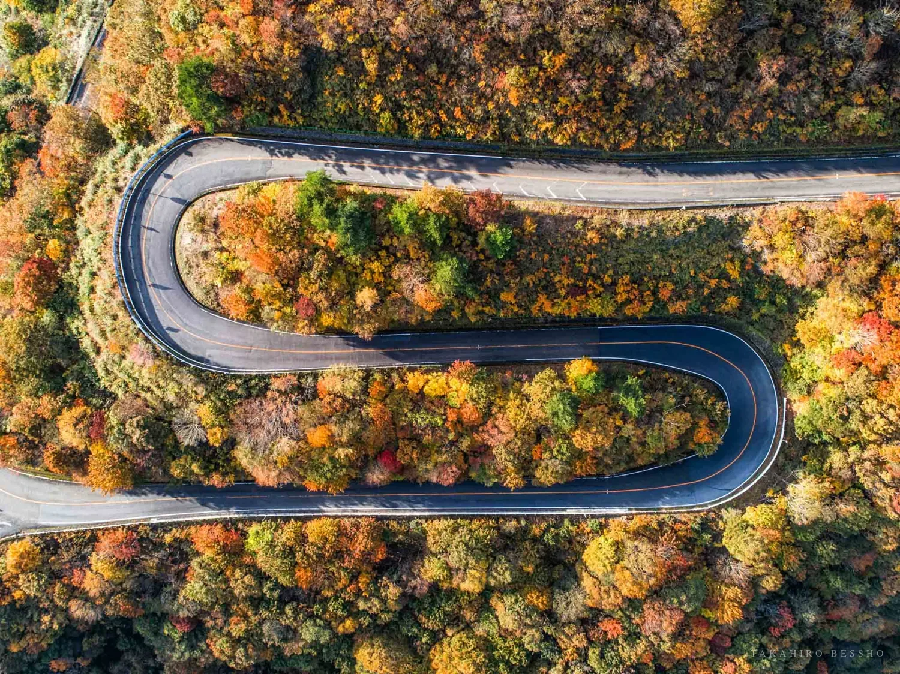
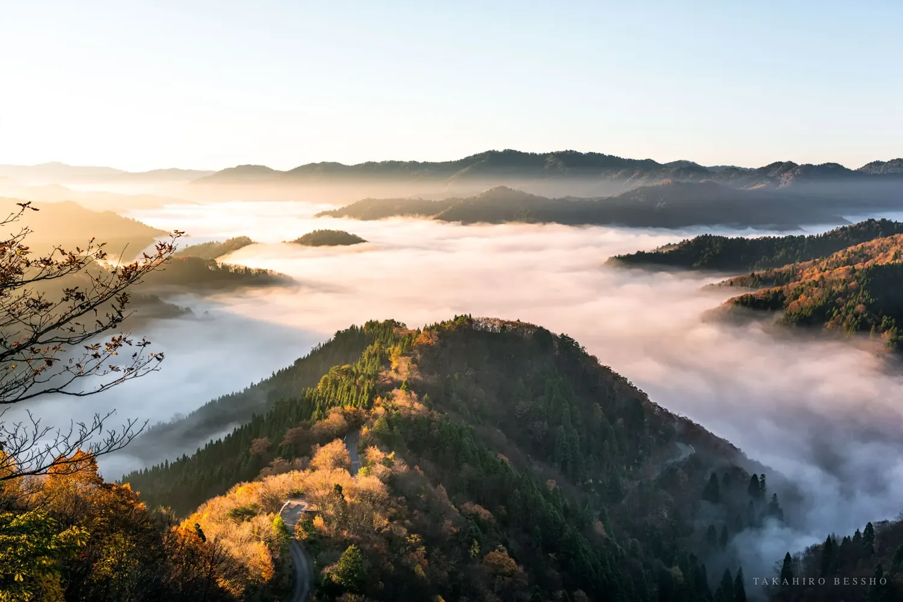
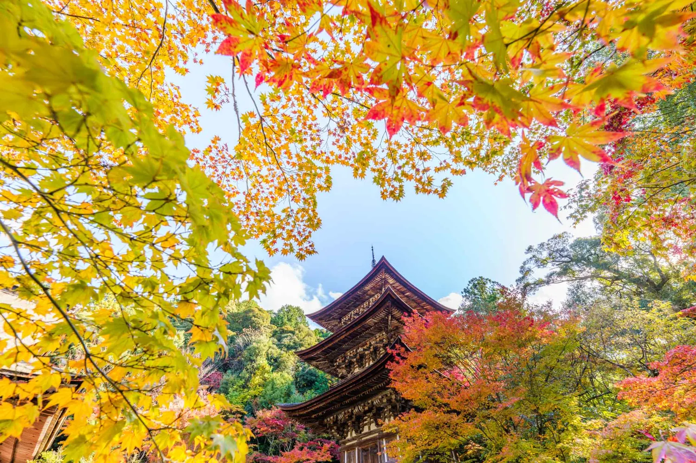
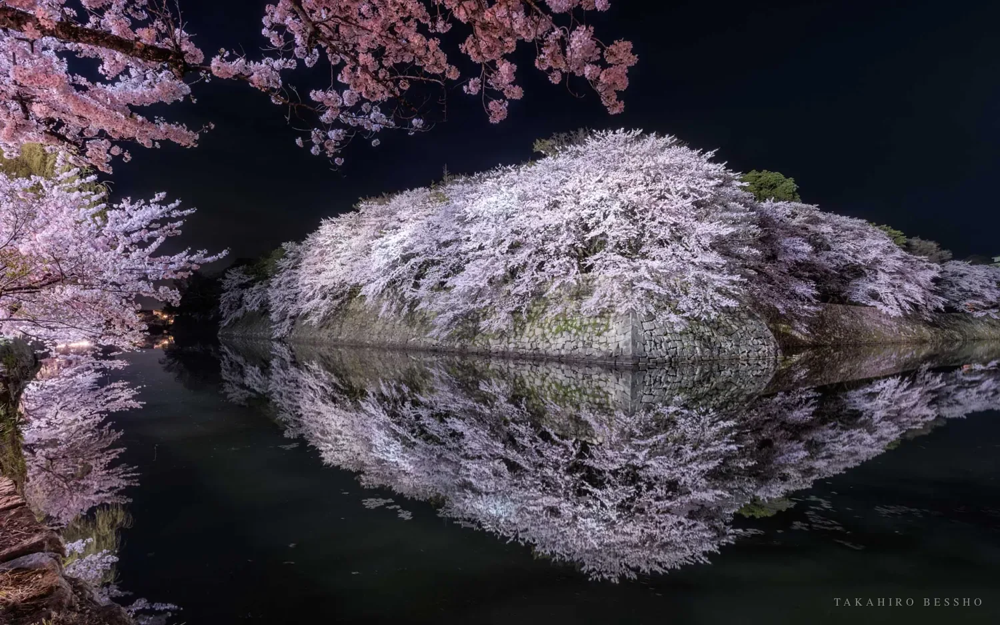
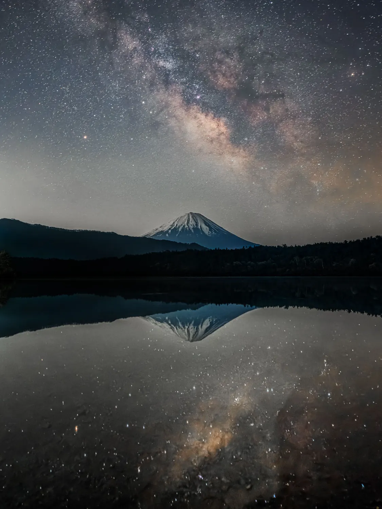
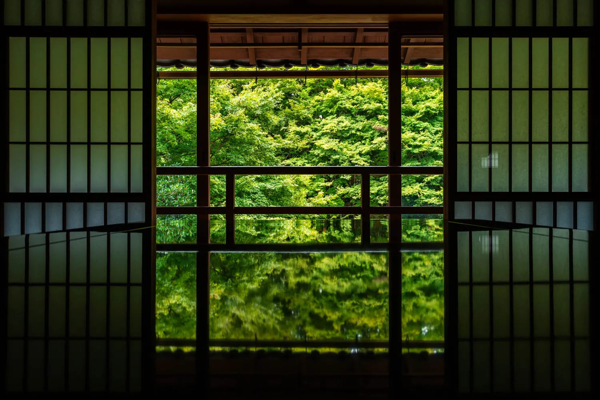
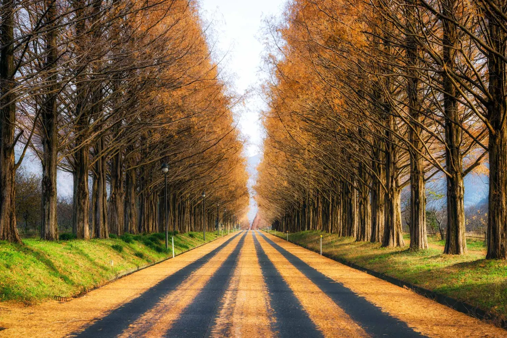
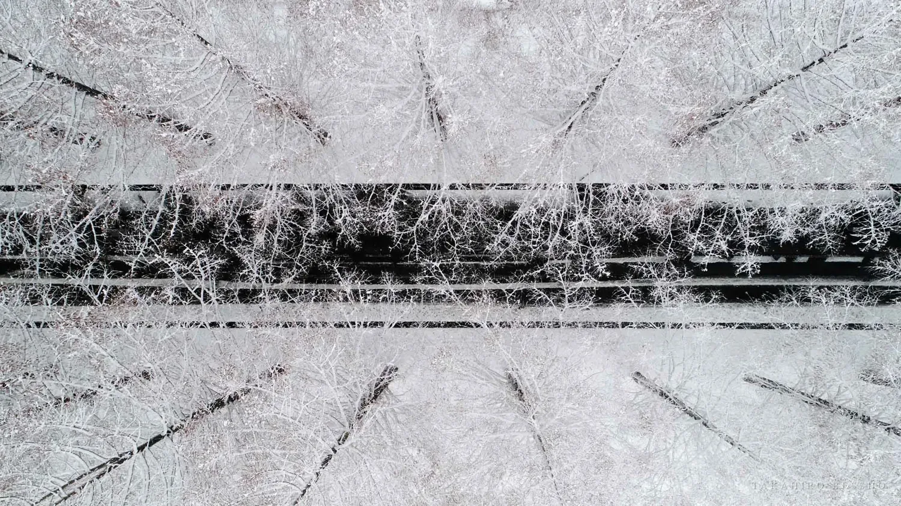
滋賀・京都を拠点に活動する風景写真家。琵琶湖を中心とした「Around The Lake」をライフワークとし、移ろう光と季節の一瞬を追い続けている。
写真家としての活動のほか、文章を通じて「フレームの外側にあるもの」を語ることにも力を注いでいる。
Read More on note